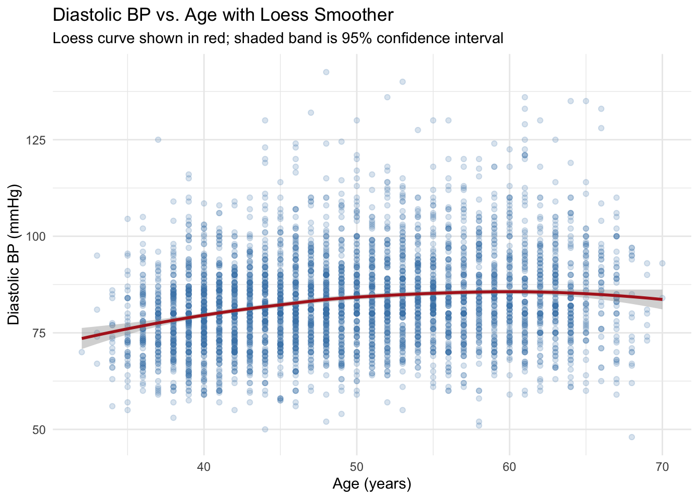
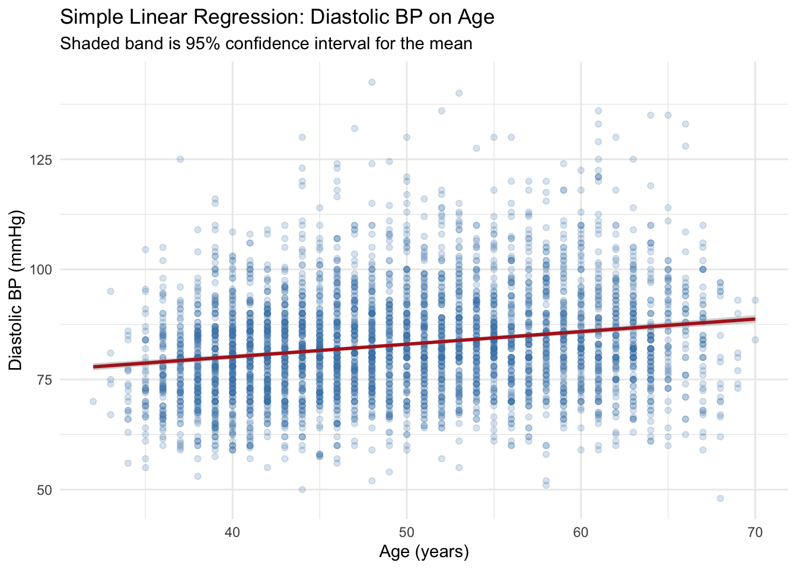
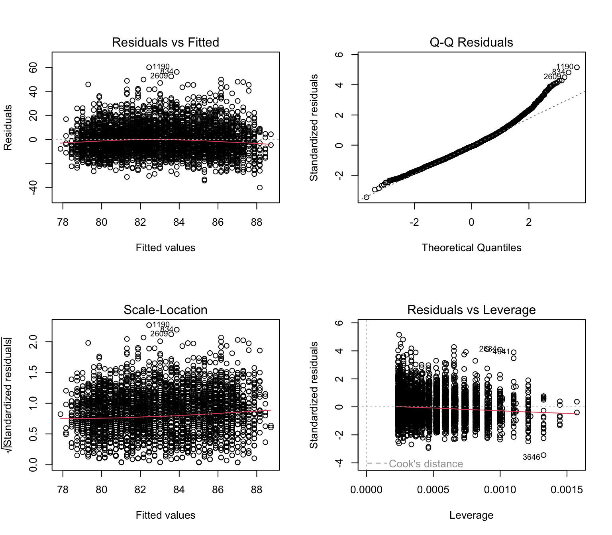
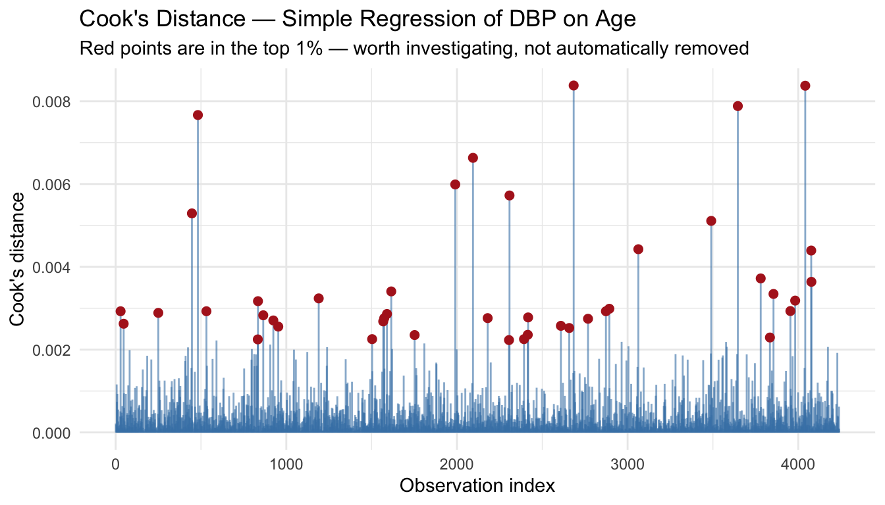
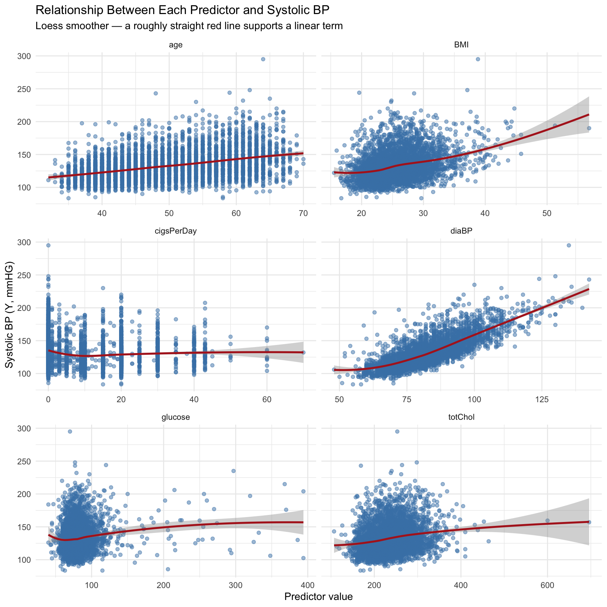

library(tidyverse)
library(this.path)
setwd(this.dir())
framingham <- read_csv("../../data/framingham.csv") |>
mutate(
male = factor(male, levels = c(0,1), labels = c("Female","Male")),
currentSmoker = factor(currentSmoker, levels = c(0,1), labels = c("Non-smoker","Smoker")),
prevalentHyp = factor(prevalentHyp, levels = c(0,1), labels = c("No","Yes")),
diabetes = factor(diabetes, levels = c(0,1), labels = c("No","Yes")),
TenYearCHD = factor(TenYearCHD, levels = c(0,1), labels = c("No","Yes")),
education = factor(education, levels = 1:4,
labels = c("Some HS","HS Diploma","Some College","College Degree"))
)Day 6 Lab: Linear Regression
SC INBRE Biostatistics Summer Intensive 2026
Exercise 1 — Simple Linear Regression: Diastolic BP and Age.
- Use
ggplot()withgeom_smooth(method = "loess")to inspect the relationship between age (age) and diastolic blood pressure (diaBP). Does the relationship look linear?
ggplot(framingham, aes(x = age, y = diaBP)) +
geom_point(alpha = 0.2, color = "steelblue") +
geom_smooth(method = "loess", color = "firebrick", se = TRUE, linewidth = 1) +
labs(x = "Age (years)", y = "Diastolic BP (mmHg)",
title = "Diastolic BP vs. Age with Loess Smoother",
subtitle = "Loess curve shown in red; shaded band is 95% confidence interval") +
theme_minimal()
I would not say this has a linear relationship. Based on the plot, the relationship appears to be quadratic. However, a quadratic relationship goes up and then goes down. Here, there is no reason why diastolic BP would go down. As a result, I would probably use a log-transformation (in practice).
Fit a simple linear regression model predicting
diaBPfromage. Write out the fitted regression equation using the estimated coefficients.Just to review, the simple linear regression model is:
\[Y = \beta_0 + \beta_1 X + \varepsilon\]
where \(Y\) is diastolic blood pressure, \(X\) is age, \(\beta_0\) is the intercept, \(\beta_1\) is the slope, and \(\varepsilon\) is the error term.
dbp_model <- lm(diaBP ~ age, data = framingham)
summary(dbp_model)
Call:
lm(formula = diaBP ~ age, data = framingham)
Residuals:
Min 1Q Median 3Q Max
-40.159 -7.876 -1.017 6.482 60.054
Coefficients:
Estimate Std. Error t value Pr(>|t|)
(Intercept) 68.73666 1.05085 65.41 <2e-16 ***
age 0.28562 0.02089 13.68 <2e-16 ***
---
Signif. codes: 0 '***' 0.001 '**' 0.01 '*' 0.05 '.' 0.1 ' ' 1
Residual standard error: 11.66 on 4238 degrees of freedom
Multiple R-squared: 0.04227, Adjusted R-squared: 0.04204
F-statistic: 187 on 1 and 4238 DF, p-value: < 2.2e-16The fitted line is:
\(\hat Y\) = 68.74 + 0.29\(\times diaBP + \epsilon\)
- Interpret the slope in plain language: what does it tell you about the relationship between age and diastolic blood pressure in this population?
Age (\(\hat\beta_1\) = 0.29): For each additional year of age, diastolic BP is estimated to increase by 0.29 mmHg on average.
How much of the variability in diastolic BP does age alone explain? Is this more or less than the R² for the
sysBP ~ agemodel from the morning session (R² = 15.5%)?R²: The model explains 4.2% of the variability in diastolic BP. This is notably lower then the R² we found for systolic BP and age.
Plot the fitted regression line with a 95% confidence band using
geom_smooth(method = "lm").
ggplot(framingham, aes(x = age, y = diaBP)) +
geom_point(alpha = 0.2, color = "steelblue") +
geom_smooth(method = "lm", color = "firebrick", se = TRUE, linewidth = 1) +
labs(x = "Age (years)", y = "Diastolic BP (mmHg)",
title = "Simple Linear Regression: Diastolic BP on Age",
subtitle = "Shaded band is 95% confidence interval for the mean") +
theme_minimal()
Exercise 2 — Model Diagnostics.
Using the diaBP ~ age model from Exercise 1:
- Produce the four standard diagnostic plots using
par(mfrow = c(2,2))andplot(model). Describe what you see in each panel. Are any model assumptions clearly violated?
Here are the four diagnostic plots for the diastolic BP vs age SLR model:
par(mfrow = c(2, 2))
plot(dbp_model)
par(mfrow = c(1, 1))If you look closely at the Residuals vs Fitted plot, you’ll see that the red mean line is below zero for fitted values that are low and high. This is not surprising given the scatterplot we saw in 1a. It appears that the linear assumption is violated here.
Also, similar to the systolic BP model, there are some indications that the normality assumption is violated as there are some large positive residuals. These values are larger then we would expect if the residuals were actually normally distributed.
Unlike the systolic BP model, the variance of the residuals appears to be relatively consistent.
- Produce a Cook’s distance plot using
ggplot()withgeom_segment(). Flag the top 1% of observations as red points. Are there any observations that stand clearly apart from the rest?
cooks_df <- tibble(
obs = seq_along(cooks.distance(dbp_model)),
cooks = cooks.distance(dbp_model)
)
ggplot(cooks_df, aes(x = obs, y = cooks)) +
geom_segment(aes(xend = obs, yend = 0), color = "steelblue", alpha = 0.6) +
geom_point(data = filter(cooks_df, cooks > quantile(cooks, 0.99)),
color = "firebrick", size = 2) +
labs(x = "Observation index", y = "Cook's distance",
title = "Cook's Distance — Simple Regression of DBP on Age",
subtitle = "Red points are in the top 1% — worth investigating, not automatically removed") +
theme_minimal()
There’s not any one point that is notably larger than the others. This is a good indication that there are no influential points in the data.
- Report the 95% confidence interval for the slope using
confint(). What does this interval tell you about the precision of the estimate?
confint(dbp_model) 2.5 % 97.5 %
(Intercept) 66.6764373 70.796884
age 0.2446742 0.326566Exercise 4 — Multiple Regression: Checking Variable Form.
Before building a multiple regression model for sysBP, inspect the relationship between each continuous predictor and sysBP using a loess smoother.
- Use
pivot_longer()andfacet_wrap()to create a single faceted plot showingsysBPon the y-axis against each of the following predictors:age,BMI,totChol,diaBP,cigsPerDay,glucose. Usegeom_smooth(method = "loess").
framingham |>
pivot_longer(cols = c(age, BMI, totChol, diaBP, cigsPerDay, glucose),
names_to = "predictor", values_to = "value") |>
ggplot(aes(x = value, y = sysBP)) +
geom_point(alpha = 0.5, color = "steelblue") +
geom_smooth(method = "loess", color = "firebrick", se = TRUE, linewidth = 1) +
facet_wrap(~ predictor, scales = "free_x", ncol = 2) +
labs(x = "Predictor value", y = "Systolic BP (Y, mmHG)",
title = "Relationship Between Each Predictor and Systolic BP",
subtitle = "Loess smoother — a roughly straight red line supports a linear term") +
theme_minimal()
- Based on the plots, which predictors appear to have a roughly linear relationship with
sysBP? Are there any that show obvious non-linearity or very weak relationships?
From the plots, I would say that age and totChol appear to have the most linear relationships. Also, I would say that glucose and cigsPerDay have the weakest relationships.
The relationships between BMI and systolic BP and diastolic and systolic BP are strong. Also, each appears to have some non-linearity.
For diastolic and systolic BP, the relationship is linear when diastolic BP is greater than 75 or so. Below 75, there does not appear to be much of a relationship between these variables.
BMI and systolic BP, let’s ignore the line for BMI larger than 45. There are not many observations out there. For BMI from \(\approx 22\) to \(45\) I would say there is a consistent linear realtionship. For BMI \(<22\) there doesn’t appear to be much realationship between the two variables.
- Note:
cigsPerDayandglucosehave missing values. Does this affect the plot? CheckcolSums(is.na(framingham[, c("cigsPerDay","glucose")])).
nrow(framingham)[1] 4240colSums(is.na(framingham[, c("cigsPerDay","glucose")]))cigsPerDay glucose
29 388 By including cigsPerDay and glucose we lose about 400 subject, or roughly 10% of the sample. Based on our scatterplots, it appears these variables have weak relationships with the outcome. As a result, we might want to consider dropping them from our model.